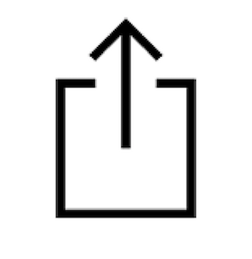

<router-outlet></router-outlet>
<button (click)="addToHomeScreen()" *ngIf="showButton">Add to Home Scree</button>
<button id="modal-btn" style="visibility: hidden;" type="button" class="btn btn-primary" (click)="openModal(template)"></button>
<ng-template class=" modal-dialog-centered" #template>
    <div  style="padding-right: 1%">
        <button type="button" class="close pull-right" aria-label="Close" (click)="modalRef.hide()">
        <span aria-hidden="true">&times;</span>
        </button>
    </div>
    <div class="modal-body text-center">
        <div class="logo-img" layout-align="center">
                
            </div>
            <div class="header">Install MLB</div>
    <p>Install this application in your home Screen for quick and easy access when you're on the go.</p>
    <div class="footer">
        <p>Just tap  then add to Home Screen</p>
    </div>
    </div>
</ng-template>